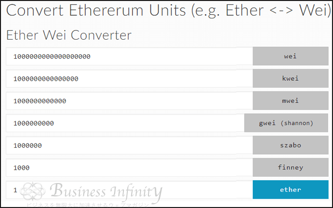
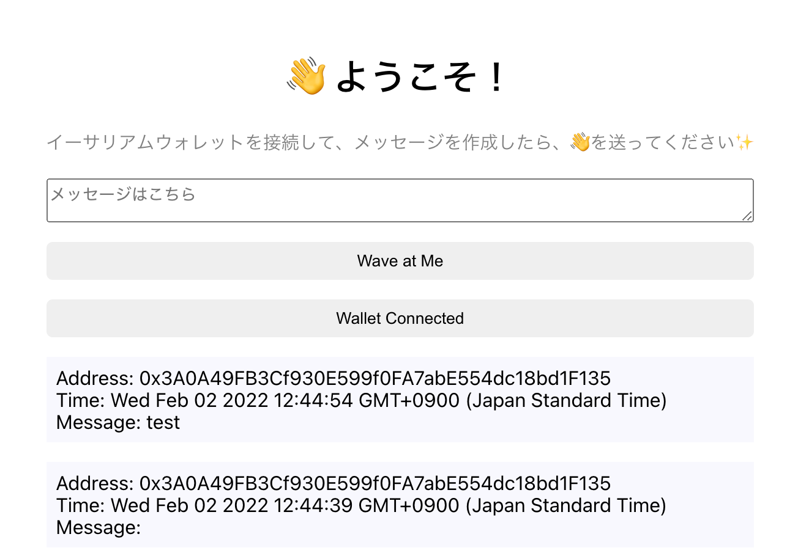

📦 構造体を使用してメッセージを配列に保存する
ここまでのレッスンで、ブロックチェーンと通信できるWebアプリケーションを実装しました。
レッスンの最後に、次の機能を実装します。
ユーザーは「👋（wave）」と一緒にメッセージを送信する。
そのデータをブロックチェーンに保存する。
Webサイトにそのデータを表示する
それでは、WavePortal.solを更新していきます。
// SPDX-License-Identifier: MIT
pragma solidity ^0.8.19;
import "hardhat/console.sol";
contract WavePortal {
uint256 private _totalWaves;
/*
* NewWaveイベントの作成
*/
event NewWave(address indexed from, uint256 timestamp, string message);
/*
* Waveという構造体を作成。
* 構造体の中身は、カスタマイズすることができます。
*/
struct Wave {
address waver; //「👋（wave）」を送ったユーザーのアドレス
string message; // ユーザーが送ったメッセージ
uint256 timestamp; // ユーザーが「👋（wave）」を送った瞬間のタイムスタンプ
}
/*
* 構造体の配列を格納するための変数wavesを宣言。
* これで、ユーザーが送ってきたすべての「👋（wave）」を保持することができます。
*/
Wave[] private _waves;
constructor() {
console.log("WavePortal - Smart Contract!");
}
/*
* _messageという文字列を要求するようにwave関数を更新。
* _messageは、ユーザーがフロントエンドから送信するメッセージです。
*/
function wave(string memory _message) public {
_totalWaves += 1;
console.log("%s waved w/ message %s", msg.sender, _message);
/*
* 「👋（wave）」とメッセージを配列に格納。
*/
_waves.push(Wave(msg.sender, _message, block.timestamp));
/*
* コントラクト側でemitされたイベントに関する通知をフロントエンドで取得できるようにする。
*/
emit NewWave(msg.sender, block.timestamp, _message);
}
/*
* 構造体配列のwavesを返してくれるgetAllWavesという関数を追加。
* これで、私たちのWEBアプリからwavesを取得することができます。
*/
function getAllWaves() public view returns (Wave[] memory) {
return _waves;
}
function getTotalWaves() public view returns (uint256) {
// コントラクトが出力する値をコンソールログで表示する。
console.log("We have %d total waves!", _totalWaves);
return _totalWaves;
}
}
上記の更新でポイントとなってくるのが、イベントの作成です。
⛱: イベントとemit
今回の実装は、NewWaveのイベントがemitされるごとに、コントラクトに書き込まれたデータをWebアプリケーションのフロントエンドに反映させることを目的としています。
下記のコードに注目してください。
event NewWave(address indexed from, uint256 timestamp, string message);
ここでは、NewWaveイベントが定義されています。引数として取る値は、下記になります。
- ユーザーのアドレス(
from) - ユーザーが
waveしてきた時刻(timestamp) - ユーザーのメッセージ(
message)
次に下記のコードを見ていきましょう。
emit NewWave(msg.sender, block.timestamp, _message);
コントラクトでイベントがemitされると、フロントエンド(App.js)でその情報を受け取ります。
NewWaveイベントがemitされる際、フロントエンド(App.js)で使用する変数msg.sender, block.timestamp, _messageをフロントエンドに送信しています。
次に、App.jsの中にgetAllWaves関数を追加して、NewWaveのイベントをフロントエンドで受け取れるように変更していきます。
const contractABI = abi.abi;の直下に下記を追加しましょう。
/* すべてのwavesを保存する状態変数を定義 */
const [allWaves, setAllWaves] = useState([]);
const getAllWaves = async () => {
const { ethereum } = window;
try {
if (ethereum) {
const provider = new ethers.providers.Web3Provider(ethereum);
const signer = provider.getSigner();
const wavePortalContract = new ethers.Contract(
contractAddress,
contractABI,
signer
);
/* コントラクトからgetAllWavesメソッドを呼び出す */
const waves = await wavePortalContract.getAllWaves();
/* UIに必要なのは、アドレス、タイムスタンプ、メッセージだけなので、以下のように設定 */
const wavesCleaned = waves.map((wave) => {
return {
address: wave.waver,
timestamp: new Date(wave.timestamp * 1000),
message: wave.message,
};
});
/* React Stateにデータを格納する */
setAllWaves(wavesCleaned);
} else {
console.log("Ethereum object doesn't exist!");
}
} catch (error) {
console.log(error);
}
};
/**
* `emit`されたイベントに反応する
*/
useEffect(() => {
let wavePortalContract;
const onNewWave = (from, timestamp, message) => {
console.log('NewWave', from, timestamp, message);
setAllWaves((prevState) => [
...prevState,
{
address: from,
timestamp: new Date(timestamp * 1000),
message: message,
},
]);
};
/* NewWaveイベントがコントラクトから発信されたときに、情報を受け取ります */
if (window.ethereum) {
const provider = new ethers.providers.Web3Provider(window.ethereum);
const signer = provider.getSigner();
wavePortalContract = new ethers.Contract(
contractAddress,
contractABI,
signer
);
wavePortalContract.on('NewWave', onNewWave);
}
/*メモリリークを防ぐために、NewWaveのイベントを解除します*/
return () => {
if (wavePortalContract) {
wavePortalContract.off('NewWave', onNewWave);
}
};
}, []);
下記のコードを見ていきましょう。
getAllWaves関数は、waves関数とほぼ同じ仕様をしています。
const getAllWaves = async () => {
const { ethereum } = window;
try {
if (ethereum) {
const provider = new ethers.providers.Web3Provider(ethereum);
const signer = provider.getSigner();
const wavePortalContract = new ethers.Contract(
contractAddress,
contractABI,
signer
);
/* コントラクトからgetAllWavesメソッドを呼び出す */
const waves = await wavePortalContract.getAllWaves();
/* UIに必要なのは、アドレス、タイムスタンプ、メッセージだけなので、以下のように設定 */
const wavesCleaned = waves.map((wave) => {
return {
address: wave.waver,
timestamp: new Date(wave.timestamp * 1000),
message: wave.message,
};
});
/* React Stateにデータを格納する */
setAllWaves(wavesCleaned);
} else {
console.log("Ethereum object doesn't exist!");
}
} catch (error) {
console.log(error);
}
};
まずは下記のコードを見ていきましょう。
const provider = new ethers.providers.Web3Provider(ethereum);
ここでは、provider（= MetaMask）を取得しています。これにより、フロントエンドがMetaMaskを介して、イーサリアムノードに接続できます。
次に、下記のコードを見ていきましょう。
const signer = provider.getSigner();
ここでは、ユーザーのウォレットアドレス (= signer)を取得しています。
次に、下記のコードを見ていきましょう。
const wavePortalContract = new ethers.Contract(
contractAddress,
contractABI,
signer
);
ここでは、コントラクトのインスタンス(= wavePortalContract)を生成し、コントラクトへの接続を行っています。
wave関数同様、コントラクトの新しいインスタンスを作成するには、以下3つの変数をethers.Contract関数に渡す必要があります。
- コントラクトのデプロイ先のアドレス（ローカル、テストネット、またはイーサリアムメインネット）
- コントラクトのABI
provider、もしくはsigner
今回は、signerを引数として渡しているので、wavePortalContractインスタンスは「読み取り」と「書き込み」の両方の機能が使えます。
最後に、下記のコードを見ていきましょう。
const wavesCleaned = waves.map((wave) => {
return {
address: wave.waver,
timestamp: new Date(wave.timestamp * 1000),
message: wave.message,
};
});
ここでは、.map()メソッドを使用してwaves配列をループし、配列内の各項目の要素を返しています。今回返す要素は、以下になります。
address: waveしたユーザーのアドレスtimestamp: waveのタイムスタンプmessage: waveとともに送信されたメッセージ
それでは、onNewWave関数を見ていきましょう。
const onNewWave = (from, timestamp, message) => {
console.log('NewWave', from, timestamp, message);
setAllWaves((prevState) => [
...prevState,
{
address: from,
timestamp: new Date(timestamp * 1000),
message: message,
},
]);
};
ここでは、下記2つの動作を実行しています。
1 . コントラクト側で新しくNewWaveイベントがemitされた時、下記の情報を取得する。
senderのアドレスsenderがNewWaveをemitしたときのタイムスタンプmessageの内容
上記のコードを実装することにより、フロントエンドからそれらのデータにアクセスできます。
2 . NewWaveイベントをフロントエンドが受け取ったときにsetAllWavesを実行する。
NewWaveイベントがemitされた際に、上記で取得したユーザーに関する3つの情報がallWaves配列に追加される。- これにより、Webアプリケーションのフロントエンドに反映するデータを自動で更新できます。
このonNewWave関数は、NewWaveのイベントリスナの働きをしています。
- イベントリスナとは「ページが表示された」「ボタンをクリックした」などの動作のことを表します。ここでは、「フロントエンドでユーザーが
waveを送った」動作を受け取ります。 - JavaScriptでは、フロントエンドでイベントが発生した際に動作するように対応付けておいた関数のことを「イベントリスナ」と呼びます。
次に、下記のコードを見ていきましょう。
if (window.ethereum) {
const provider = new ethers.providers.Web3Provider(window.ethereum);
const signer = provider.getSigner();
wavePortalContract = new ethers.Contract(
contractAddress,
contractABI,
signer
);
/* ここに注目 */
wavePortalContract.on('NewWave', onNewWave);
}
wavePortalContract.on('NewWave', onNewWave)により、上記で定義したonNewWaveが呼び出されます。
wavePortalContract.on('NewWave', onNewWave)により、フロントエンドは、NewWaveイベントがコントラクトから発信されたときに、情報を受け取ります。これにより、情報がフロントエンドに反映されます。
このことを、コンポーネント（情報）がマウント（フロントエンドに反映）されると言います。
最後に下記のコードを見ていきましょう。
return () => {
if (wavePortalContract) {
/* ここに注目 */
wavePortalContract.off('NewWave', onNewWave);
}
};
}, []);
コンポーネントがマウントされる状態をそのままにしておくと、メモリリーク（コンピュータを動作させている内に、使用可能なメモリの容量が減っていってしまう現象）が発生する可能性があります。
メモリリークを防ぐために、wavePortalContract.off('NewWave', onNewWave)では、onNewWave関数の稼働をやめています。これは、イベントリスナをやめることを意味しています。
🧐 テストを実行する
WavePortal.solコントラクトを変更したので、run.jsを更新し、テストを行います。
下記のようにrun.jsを更新してください。
const main = async () => {
const waveContractFactory = await hre.ethers.getContractFactory('WavePortal');
const waveContract = await waveContractFactory.deploy();
console.log('Contract added to:', waveContract.address);
let waveCount;
waveCount = await waveContract.getTotalWaves();
console.log(waveCount.toNumber());
/**
* 「👋（wave）」を送る
*/
let waveTxn = await waveContract.wave('A message!');
await waveTxn.wait(); // トランザクションが承認されるのを待つ（テスト:1回目）
const [_, randomPerson] = await hre.ethers.getSigners();
waveTxn = await waveContract.connect(randomPerson).wave('Another message!');
await waveTxn.wait(); // トランザクションが承認されるのを待つ（テスト:2回目）
let allWaves = await waveContract.getAllWaves();
console.log(allWaves);
};
const runMain = async () => {
try {
await main();
process.exit(0);
} catch (error) {
console.log(error);
process.exit(1);
}
};
runMain();
run.jsを更新したら、ターミナル上で下記を実行します。
yarn contract run:script
下記のような結果がターミナルに表示されていればテストは成功です。
Compiling 1 file with 0.8.19
Solidity compilation finished successfully
WavePortal - Smart Contract!
Contract added to: 0x5FbDB2315678afecb367f032d93F642f64180aa3
We have 0 total waves!
0
0xf39fd6e51aad88f6f4ce6ab8827279cfffb92266 waved w/ message A message!
0x70997970c51812dc3a010c7d01b50e0d17dc79c8 waved w/ message Another message!
[
[
'0xf39Fd6e51aad88F6F4ce6aB8827279cffFb92266',
'A message!',
BigNumber { value: "1643724588" },
waver: '0xf39Fd6e51aad88F6F4ce6aB8827279cffFb92266',
message: 'A message!',
timestamp: BigNumber { value: "1643724588" }
],
[
'0x70997970C51812dc3A010C7d01b50e0d17dc79C8',
'Another message!',
BigNumber { value: "1643724589" },
waver: '0x70997970C51812dc3A010C7d01b50e0d17dc79C8',
message: 'Another message!',
timestamp: BigNumber { value: "1643724589" }
]
]
注：「タイムスタンプ」は、「BigNumber」として出力されています。「BigNumber」については、こちらを参照してください。
🛩 もう一度デプロイする
コントラクトを更新したので、下記を実行する必要があります。
再度コントラクトをデプロイする
フロントエンドのコントラクトアドレスを更新する(更新するファイル:
App.js)フロントエンドのABIファイルを更新する(更新するファイル:
client/src/utils/WavePortal.json)
コントラクトを更新するたび、これらの 3 つのステップを実行する必要があります。
✍️: 上記 3 つのステップが必要な理由 ずばり、スマートコントラクトは一度デプロイされると変更することができないからです。
コントラクトを更新するためには、再びデプロイする必要があります。
再びデプロイされたコントラクトは、完全に新しいコントラクトとして扱われるため、すべての変数はリセットされます。
つまり、コントラクトを一度更新してしまうと、すべての既存の「👋（wave）」データが失われます。
それでは、復習も兼ねて、下記を実行していきましょう。
1 . ターミナル上で下記を実行し、コントラクトを再度デプロイする。
yarn contract deploy
ターミナルに下記のような出力結果が表示されていれば、デプロイは成功です。
Deploying contracts with account: 0x821d451FB0D9c5de6F818d700B801a29587C3dCa
Account balance: 333733007254181125
Contract deployed to: 0x8B1D31bFBf34dBF12c73034215752261e55b443c
2 . App.jsのcontractAddressを、ターミナルで取得した新しいコントラクトアドレスに変更します。
下記のように、ターミナルに出力されたコントラクトアドレス(0x..)をコピーしましょう。
Contract deployed to: 0x... ← あなたのコントラクトアドレスをコピー
コピーしたアドレスをApp.jsのconst contractAddress = 'こちら'に貼り付けましょう。
3 . 以前と同じようにartifactsから ABI ファイルを取得します。下記のステップを実行してください。
1. ターミナル上で
contractにいることを確認する（もしくは移動する）。2. ターミナル上で下記を実行する。
code artifacts/contracts/WavePortal.sol/WavePortal.json3. VS Code で
WavePortal.jsonファイルが開かれるので、中身を全てコピーしましょう。※ VS Code のファインダーを使って、直接WavePortal.jsonを開くことも可能です。4. コピーした
contract/artifacts/contracts/WavePortal.sol/WavePortal.jsonの中身を新しく作成したclient/src/utils/WavePortal.jsonの中に貼り付けてください。
繰り返しますが、コントラクトを更新するたびにこの作業する必要があります。
🔌 Web アプリケーションにコントラクトの変更を反映させる
下記のようにApp.jsを更新しましょう。
新しく実装した機能は以下のつです。
ユーザーは「👋（wave）」と一緒にメッセージを送信する。
そのデータをブロックチェーンに保存する。
Webサイトにそのデータを表示する。
/* ethers 変数を使えるようにする*/
import { ethers } from 'ethers';
import React, { useEffect, useState } from 'react';
import './App.css';
/* ABIファイルを含むWavePortal.jsonファイルをインポートする*/
import abi from './utils/WavePortal.json';
const App = () => {
/* ユーザーのパブリックウォレットを保存するために使用する状態変数を定義 */
const [currentAccount, setCurrentAccount] = useState('');
/* ユーザーのメッセージを保存するために使用する状態変数を定義 */
const [messageValue, setMessageValue] = useState('');
/* すべてのwavesを保存する状態変数を定義 */
const [allWaves, setAllWaves] = useState([]);
console.log('currentAccount: ', currentAccount);
/* デプロイされたコントラクトのアドレスを保持する変数を作成 */
const contractAddress = '新しいコントラクトアドレス';
/* コントラクトからすべてのwavesを取得するメソッドを作成 */
/* ABIの内容を参照する変数を作成 */
const contractABI = abi.abi;
const getAllWaves = async () => {
const { ethereum } = window;
try {
if (ethereum) {
const provider = new ethers.providers.Web3Provider(ethereum);
const signer = provider.getSigner();
const wavePortalContract = new ethers.Contract(
contractAddress,
contractABI,
signer
);
/* コントラクトからgetAllWavesメソッドを呼び出す */
const waves = await wavePortalContract.getAllWaves();
/* UIに必要なのは、アドレス、タイムスタンプ、メッセージだけなので、以下のように設定 */
const wavesCleaned = waves.map((wave) => {
return {
address: wave.waver,
timestamp: new Date(wave.timestamp * 1000),
message: wave.message,
};
});
/* React Stateにデータを格納する */
setAllWaves(wavesCleaned);
} else {
console.log("Ethereum object doesn't exist!");
}
} catch (error) {
console.log(error);
}
};
/**
* `emit`されたイベントをフロントエンドに反映させる
*/
useEffect(() => {
let wavePortalContract;
const onNewWave = (from, timestamp, message) => {
console.log('NewWave', from, timestamp, message);
setAllWaves((prevState) => [
...prevState,
{
address: from,
timestamp: new Date(timestamp * 1000),
message: message,
},
]);
};
/* NewWaveイベントがコントラクトから発信されたときに、情報をを受け取ります */
if (window.ethereum) {
const provider = new ethers.providers.Web3Provider(window.ethereum);
const signer = provider.getSigner();
wavePortalContract = new ethers.Contract(
contractAddress,
contractABI,
signer
);
wavePortalContract.on('NewWave', onNewWave);
}
/*メモリリークを防ぐために、NewWaveのイベントを解除します*/
return () => {
if (wavePortalContract) {
wavePortalContract.off('NewWave', onNewWave);
}
};
}, []);
/* window.ethereumにアクセスできることを確認する関数を実装 */
const checkIfWalletIsConnected = async () => {
try {
const { ethereum } = window;
if (!ethereum) {
console.log('Make sure you have MetaMask!');
return;
} else {
console.log('We have the ethereum object', ethereum);
}
/* ユーザーのウォレットへのアクセスが許可されているかどうかを確認 */
const accounts = await ethereum.request({ method: 'eth_accounts' });
if (accounts.length !== 0) {
const account = accounts[0];
console.log('Found an authorized account:', account);
setCurrentAccount(account);
getAllWaves();
} else {
console.log('No authorized account found');
}
} catch (error) {
console.log(error);
}
};
/* connectWalletメソッドを実装 */
const connectWallet = async () => {
try {
const { ethereum } = window;
if (!ethereum) {
alert('Get MetaMask!');
return;
}
const accounts = await ethereum.request({
method: 'eth_requestAccounts',
});
console.log('Connected: ', accounts[0]);
setCurrentAccount(accounts[0]);
} catch (error) {
console.log(error);
}
};
/* waveの回数をカウントする関数を実装 */
const wave = async () => {
try {
const { ethereum } = window;
if (ethereum) {
const provider = new ethers.providers.Web3Provider(ethereum);
const signer = provider.getSigner();
/* ABIを参照 */
const wavePortalContract = new ethers.Contract(
contractAddress,
contractABI,
signer
);
let count = await wavePortalContract.getTotalWaves();
console.log('Retrieved total wave count...', count.toNumber());
/* コントラクトに👋（wave）を書き込む */
const waveTxn = await wavePortalContract.wave(messageValue, {
gasLimit: 300000,
});
console.log('Mining...', waveTxn.hash);
await waveTxn.wait();
console.log('Mined -- ', waveTxn.hash);
count = await wavePortalContract.getTotalWaves();
console.log('Retrieved total wave count...', count.toNumber());
} else {
console.log("Ethereum object doesn't exist!");
}
} catch (error) {
console.log(error);
}
};
/* WEBページがロードされたときにcheckIfWalletIsConnected()を実行 */
useEffect(() => {
checkIfWalletIsConnected();
}, []);
return (
<div className="mainContainer">
<div className="dataContainer">
<div className="header">
<span role="img" aria-label="hand-wave">
👋
</span>{' '}
WELCOME!
</div>
<div className="bio">
イーサリアムウォレットを接続して、メッセージを作成したら、
<span role="img" aria-label="hand-wave">
👋
</span>
を送ってください
<span role="img" aria-label="shine">
✨
</span>
</div>
<br />
{/* ウォレットコネクトのボタンを実装 */}
{!currentAccount && (
<button className="waveButton" onClick={connectWallet}>
Connect Wallet
</button>
)}
{currentAccount && (
<button className="waveButton">Wallet Connected</button>
)}
{/* waveボタンにwave関数を連動 */}
{currentAccount && (
<button className="waveButton" onClick={wave}>
Wave at Me
</button>
)}
{/* メッセージボックスを実装*/}
{currentAccount && (
<textarea
name="messageArea"
placeholder="メッセージはこちら"
type="text"
id="message"
value={messageValue}
onChange={(e) => setMessageValue(e.target.value)}
/>
)}
{/* 履歴を表示する */}
{currentAccount &&
allWaves
.slice(0)
.reverse()
.map((wave, index) => {
return (
<div
key={index}
style={{
backgroundColor: "#F8F8FF",
marginTop: "16px",
padding: "8px",
}}
>
<div>Address: {wave.address}</div>
<div>Time: {wave.timestamp.toString()}</div>
<div>Message: {wave.message}</div>
</div>
);
})}
</div>
</div>
);
};
export default App;
contractAddress = '新しいコントラクトアドレス'を、ターミナルで取得した新しいコントラクトアドレスに変更するのをお忘れなく。
復習も兼ねて、上記で実装した機能を詳しく見ていきましょう。
1 . Webアプリケーションからメッセージを受け取る
下記をReactNodeを返す関数型Appの中に実装しました。
/* ユーザーのパブリックウォレットアドレスを保存するために使用する状態変数を定義 */
const [currentAccount, setCurrentAccount] = useState('');
/* ユーザーのメッセージを保存するために使用する状態変数を定義 */
const [messageValue, setMessageValue] = useState('');
/* すべてのwavesを保存する状態変数を定義 */
const [allWaves, setAllWaves] = useState([]);
ここでは、ユーザーの情報を保存するために使用する変数と関数を定義し、初期化しています。
const [currentAccount, setCurrentAccount] = useState('');
- ユーザーのパブリックウォレットを格納する変数(＝
currentAccount) - ユーザーのパブリックウォレットを更新する関数(＝
setCurrentAccount)
const [messageValue, setMessageValue] = useState('');
- ユーザーのメッセージを格納する変数(＝
messageValue) - ユーザーのメッセージを更新する関数(＝
setMessageValue)
const [allWaves, setAllWaves] = useState([]);
- 現在のwavesの状態を格納する変数(＝
allWaves) - 現在のwavesの状態を更新する関数(＝
setAllWaves)
それからgetAllWaves関数の中にwavesCleaned関数を実装して、Webアプリケーションからアドレス、タイムスタンプ、メッセージを取得できるようにしています。
詳しく見ていきましょう。
const wavesCleaned = waves.map((wave) => { return { address: wave.waver, timestamp: new Date(wave.timestamp * 1000), message: wave.message, }; }); setAllWaves(wavesCleaned);ここでは状態変数（＝
waveCleaned）に、map メソッド を使って、データを追加しています。
mapメソッドは、元となる配列から新しく配列を作るためのメソッドです。配列のすべての要素に対して、与えられた関数を実行し、関数で返された値で新しい配列を生成します。
mapメソッドによって下記のデータが、wavesCleanedに格納されます。
waveしたユーザーのアドレス（＝address）- 送信した時間（＝
timestamp）- 付随するメッセージ（＝
message）最後に、
AllWavesの状態を更新しています。setAllWaves(wavesCleaned);これで、新しい
waveの情報がwaves変数に新たな配列として追加されます。
⛽️: ガスリミット(gasLimit)の設定
下記を実装して、トランザクションに使用できるガス代（＝
gasLimit）に制限を設けています。wavePortalContract.wave(messageValue, { gasLimit: 300000 });
gasLimitは、「ガス量」の最大値（上限）を設定するためのパラメータです。これは、送金先のプログラムの問題などで、ずっと処理が実行され続けて、送金手数料の支払いが無限に発生する（「ガス量」が無限に大きくなる）ことを防ぐためのものです。
ガス量がガスリミットで設定された数値以上になった場合は処理を中断して、それ以上の送金手数料が発生しないような仕組みになっています。
つまり、送金手数料として支払う最大値（上限）は、下記のようになります。
最大送金手数料（ETH） = ガス価格 × ガスリミット今回は、
gasLimitを300000Gas に設定しています。💸: ガス価格とは 送金手数料を決める、もう 1 つのパラメータが「ガス価格」です。
ガス価格は、1Gas 当たりの価格を意味します。 基本的な1Gas 当たりの価格は 「21
Gwei」 で送金されます。ガス価格の単位として使われている「
wei」は、イーサリアムの単位で 1ETH とのレートは下図のようになっています。 
Gはギガのことで、1Gwei = 0.000000001ETHです。ガス価格は、送金者が自由に設定することができます。
マイナーは、ガス価格が高い（＝マイニング報酬が多い）トランザクションを優先的に承認するので、ガス価格を高く設定しておくと、送金が早くなる傾向があります。
2 . フロントエンドにメッセージボックスを設置する
下記をフロントエンドに実装しました。
{
currentAccount && (
<textarea
name="messageArea"
placeholder="メッセージはこちら"
type="text"
id="message"
value={messageValue}
onChange={(e) => setMessageValue(e.target.value)}
/>
);
}
これは、認証済みのアドレス(＝ currentAccount)が存在する場合に、テキストボックスをUIに表示する仕様になっています。これで、ユーザーはUIから直接メッセージを書き込めます。
3 . 送られてきたメッセージをフロントエンドに表示する
{
allWaves
.slice(0)
.reverse()
.map((wave, index) => {
return (
<div
key={index}
style={{
backgroundColor: "#F8F8FF",
marginTop: "16px",
padding: "8px",
}}
>
<div>Address: {wave.address}</div>
<div>Time: {wave.timestamp.toString()}</div>
<div>Message: {wave.message}</div>
</div>
);
});
}
ローカルサーバーでWebアプリケーションをホストして、フロントエンドを確認しながら、上記のコードがどのようにフロントエンドに反映されているのか、考察してみてください。
⭐️ ローカルサーバーの立ち上げ
yarn client startを実行localhostでWebアプリケーションを参照
こちらが、フロントエンドの実装結果の例になります。

ターミナルを閉じるときは、以下のコマンドが使えます ✍️
- Mac:
ctrl + c - Windows:
ctrl + shift + w
🙋♂️ 質問する
ここまでの作業で何かわからないことがある場合は、Discordの#ethereumで質問をしてください。
ヘルプをするときのフローが円滑になるので、エラーレポートには下記の3点を記載してください ✨
1. 質問が関連しているセクション番号とレッスン番号
2. 何をしようとしていたか
3. エラー文をコピー&ペースト
4. エラー画面のスクリーンショット
Webアプリケーションの大枠が完成したら、次のレッスンに進みましょう 🎉